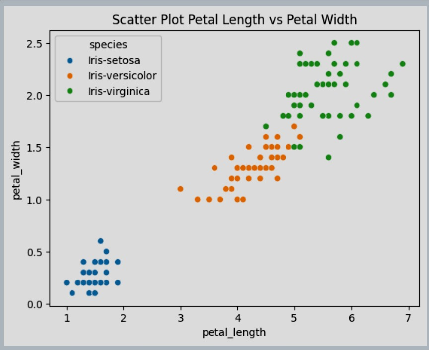
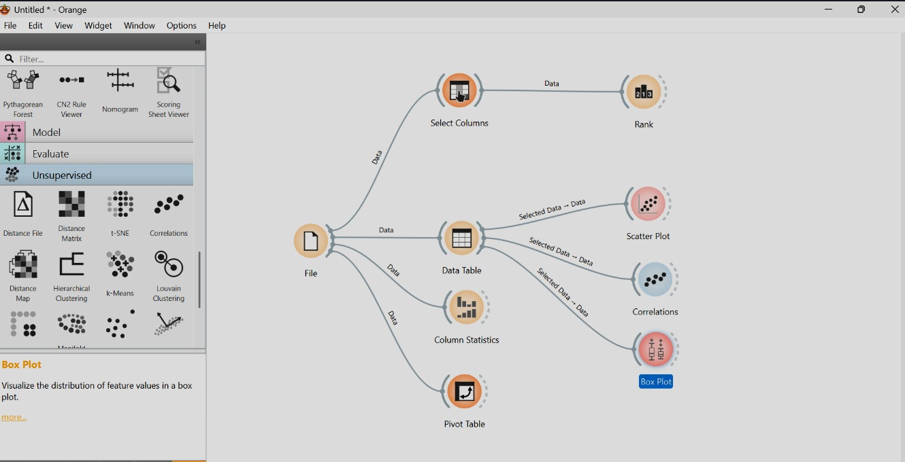
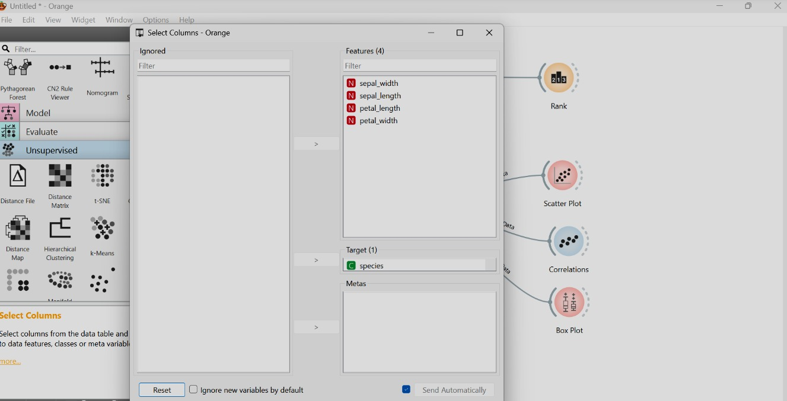
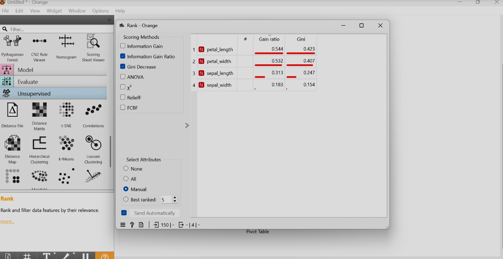
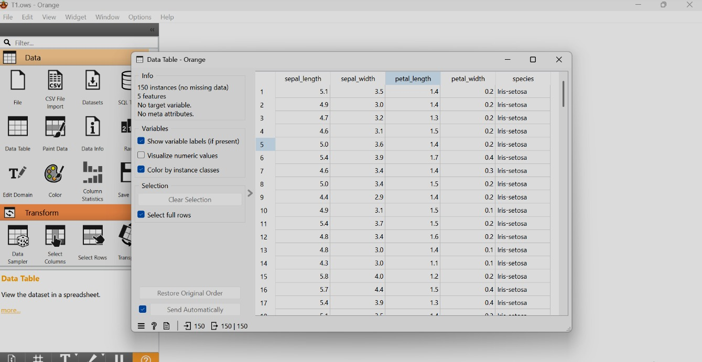
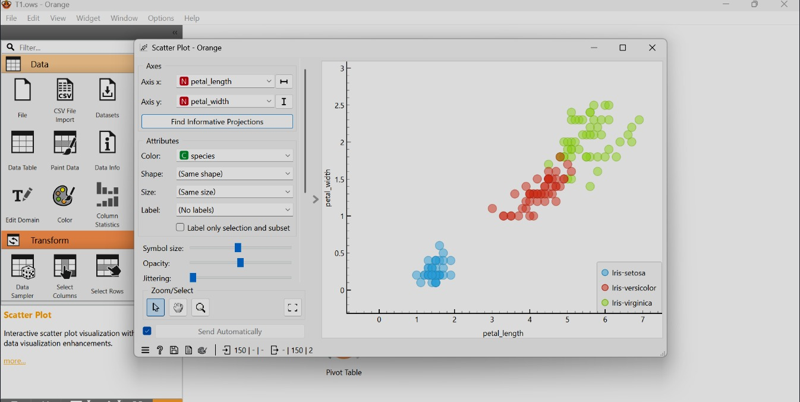
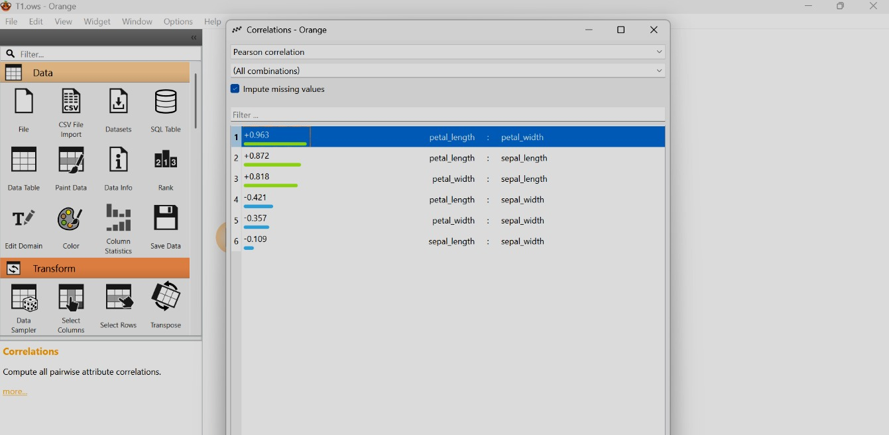
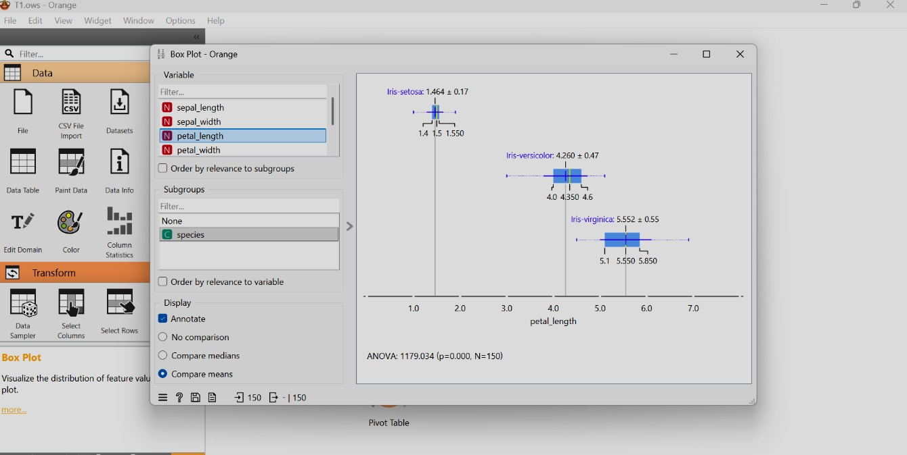
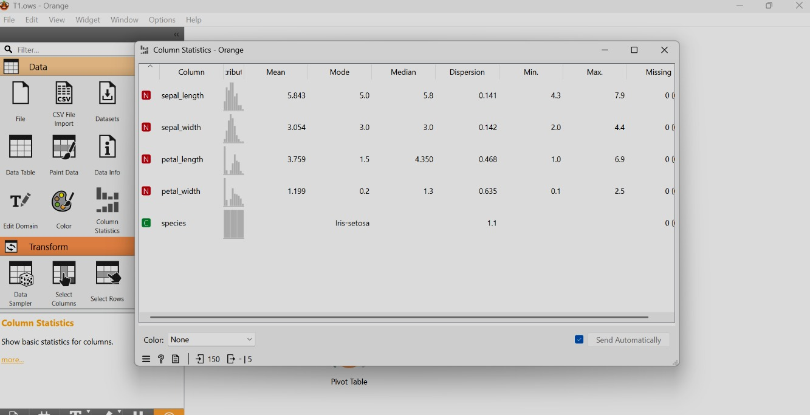
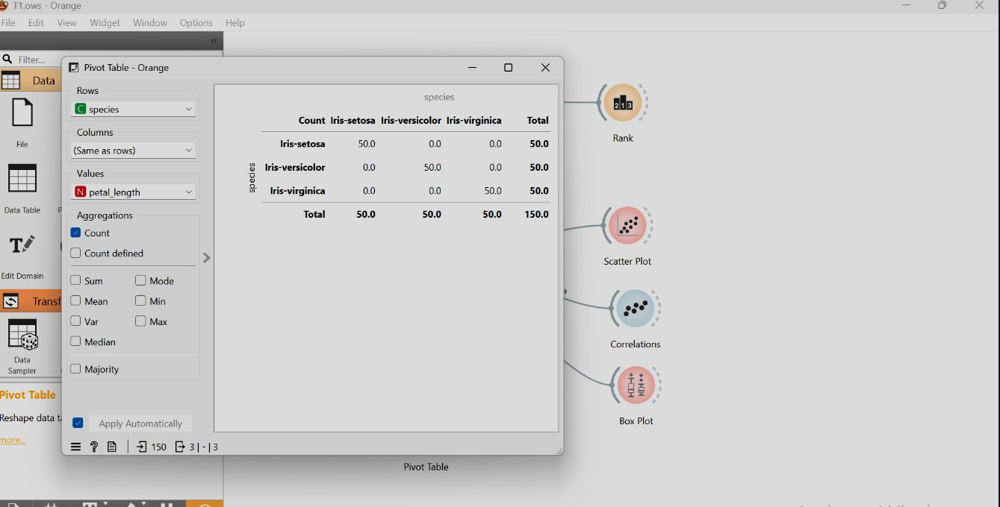

Data Understanding#
1. Pengertian Data Understanding#
Data Understanding merupakan tahap awal dalam proses data mining yang berfokus pada kegiatan mengenali, memahami, serta mengevaluasi kualitas data sebelum dilakukan analisis lanjutan.
Pada tahap ini dilakukan pengamatan langsung terhadap isi dataset agar peneliti mengetahui:
Struktur data
Tipe variabel
Kondisi data
Kelengkapan data
Keseimbangan distribusi kelas
Tahap ini sangat penting karena kualitas pemahaman terhadap data akan sangat mempengaruhi ketepatan metode analisis dan hasil yang diperoleh pada tahap berikutnya.
2. Collect Initial Data#
Pada tahap ini dilakukan proses pengambilan dataset Iris yang digunakan sebagai bahan analisis.
Dataset diperoleh dalam bentuk file CSV yang berisi data pengukuran bunga iris.
Data kemudian di-import ke dalam aplikasi Orange Data Mining untuk dilakukan eksplorasi awal.
Tujuan tahap ini adalah:
Memastikan dataset berhasil dimuat
Memastikan tidak ada error format
Memastikan struktur kolom sesuai dengan kebutuhan analisis
Dataset Iris terdiri dari data pengukuran tiga spesies bunga iris, yaitu:
Iris-setosa
Iris-versicolor
Iris-virginica
3. Describe Data#
3.1 Informasi Umum Dataset#
Keterangan |
Nilai |
|---|---|
Jumlah Data |
150 |
Jumlah Variabel |
5 |
Missing Value |
Tidak Ada |
Distribusi Kelas |
Seimbang |
Dataset terdiri dari 150 baris data dan 5 variabel.
3.2 Struktur Dataset#
Variabel Numerik:#
sepal_length (panjang kelopak)
sepal_width (lebar kelopak)
petal_length (panjang mahkota)
petal_width (lebar mahkota)
Variabel Kategorikal:#
species (jenis bunga)
Setiap baris data merepresentasikan satu sampel bunga iris lengkap dengan ukuran bagian-bagiannya serta label spesiesnya.
4. Explore Data#
4.1 Scatter Plot#
Scatter Plot digunakan untuk melihat penyebaran data antar dua variabel.
Pada eksplorasi ini digunakan:
Sumbu X : petal_length
Sumbu Y : petal_width
Setiap titik mewakili satu sampel bunga, dengan warna berbeda untuk setiap spesies.

Hasil Analisis:#
Iris-setosa terpisah sangat jelas dari dua spesies lainnya.
Iris-versicolor dan Iris-virginica memiliki beberapa titik yang berdekatan.
Variabel petal_length dan petal_width sangat efektif dalam membedakan spesies.
Kesimpulan: karakteristik pada bagian mahkota (petal) memiliki kemampuan pemisahan kelas yang tinggi.
4.2 Correlation Matrix#
Analisis korelasi dilakukan menggunakan metode Pearson Correlation.
Nilai korelasi berada pada rentang:
+1 → hubungan sangat kuat positif
0 → tidak ada hubungan
-1 → hubungan negatif kuat
Sepal Length |
Sepal Width |
Petal Length |
Petal Width |
|
|---|---|---|---|---|
Sepal Length |
1.000 |
-0.109 |
0.872 |
0.818 |
Sepal Width |
-0.109 |
1.000 |
-0.421 |
-0.357 |
Petal Length |
0.872 |
-0.421 |
1.000 |
0.963 |
Petal Width |
0.818 |
-0.357 |
0.963 |
1.000 |
Interpretasi:#
petal_length dan petal_width memiliki korelasi sangat tinggi (0.963)
sepal_length memiliki korelasi cukup kuat dengan petal_length (0.872)
sepal_length dan sepal_width hampir tidak berkorelasi (-0.109)
Kesimpulan: variabel petal memiliki hubungan internal yang kuat dan lebih informatif.
4.3 Statistik Deskriptif#
Variabel |
Mean |
Median |
Modus |
Std Dev |
Min |
Max |
|---|---|---|---|---|---|---|
Sepal Length |
5.843 |
5.8 |
5.0 |
0.828 |
4.3 |
7.9 |
Sepal Width |
3.054 |
3.0 |
3.0 |
0.434 |
2.0 |
4.4 |
Petal Length |
3.759 |
4.35 |
1.5 |
1.764 |
1.0 |
6.9 |
Petal Width |
1.199 |
1.3 |
0.2 |
0.763 |
0.1 |
2.5 |
Penjelasan:#
Mean menunjukkan rata-rata nilai.
Median menunjukkan nilai tengah.
Modus menunjukkan nilai yang paling sering muncul.
Standar deviasi menunjukkan tingkat penyebaran data.
Variabel petal memiliki variasi yang lebih besar dibandingkan variabel sepal.
4.4 Ranking Variabel (Feature Importance)#
Urutan atribut berdasarkan tingkat pengaruh terhadap klasifikasi:
Petal Length (Paling berpengaruh)
Petal Width
Sepal Length
Sepal Width (Paling rendah)
Kesimpulan: Karakteristik mahkota bunga (petal) lebih dominan dalam membedakan spesies dibandingkan kelopak (sepal).
4.5 Pivot Table (Distribusi Spesies)#
Spesies |
Jumlah Data |
|---|---|
Iris-setosa |
50 |
Iris-versicolor |
50 |
Iris-virginica |
50 |
Total keseluruhan = 150 data.
Distribusi kelas yang seimbang sangat baik untuk proses klasifikasi karena tidak terjadi bias kelas.
5. Verify Data Quality#
Hasil verifikasi menunjukkan:
Tidak terdapat missing value
Tidak terdapat duplikasi mencolok
Format data konsisten
Tipe data sesuai
Distribusi kelas seimbang
Kesimpulan akhir: Dataset Iris memiliki kualitas data yang sangat baik dan layak digunakan untuk analisis klasifikasi.
6. Dokumentasi Eksplorasi Menggunakan Orange#
Berikut adalah dokumentasi proses eksplorasi data menggunakan Orange:









7. Data Preparation#
Data Preparation merupakan tahap persiapan data sebelum dilakukan proses pemodelan. Tahap ini bertujuan untuk memastikan data berada dalam kondisi optimal untuk diproses oleh algoritma machine learning.
7.1 Pembersihan Data (Data Cleaning)#
Berdasarkan tahap Data Understanding sebelumnya, diperoleh hasil:
Tidak terdapat missing value
Tidak terdapat duplikasi data
Format numerik sudah konsisten
Distribusi kelas seimbang
Karena dataset Iris sudah bersih, tidak diperlukan proses pembersihan tambahan.
7.2 Seleksi Fitur (Feature Selection)#
Berdasarkan hasil analisis Rank dan Correlation:
petal_length
petal_width
merupakan dua fitur paling berpengaruh dalam membedakan spesies.
Namun dalam proses modeling, digunakan seluruh fitur numerik untuk menjaga kelengkapan informasi, yaitu:
sepal_length
sepal_width
petal_length
petal_width
7.3 Pembagian Data (Data Splitting)#
Pada tahap ini data dibagi menjadi:
Data Training (untuk melatih model)
Data Testing (untuk menguji performa model)
Umumnya digunakan pembagian:
80% Training
20% Testing
Pembagian ini bertujuan agar model dapat diuji pada data yang belum pernah dilihat sebelumnya.
8. Modeling#
Tahap Modeling bertujuan untuk membangun model klasifikasi berdasarkan dataset Iris.
Pada eksplorasi menggunakan Orange, beberapa algoritma klasifikasi dapat digunakan, seperti:
Logistic Regression
k-Nearest Neighbor (k-NN)
Decision Tree
Random Forest
Naïve Bayes
Dalam percobaan ini digunakan algoritma klasifikasi standar untuk membandingkan performa.
8.1 Algoritma yang Digunakan#
1. k-Nearest Neighbor (k-NN)#
Algoritma ini bekerja dengan mencari sejumlah tetangga terdekat dari suatu data berdasarkan jarak tertentu.
Kelebihan:
Sederhana
Cocok untuk dataset kecil seperti Iris
2. Decision Tree#
Decision Tree membangun model berbentuk struktur pohon keputusan berdasarkan pembagian fitur.
Kelebihan:
Mudah dipahami
Dapat menjelaskan proses klasifikasi
3. Logistic Regression#
Digunakan untuk klasifikasi dengan pendekatan probabilistik.
Kelebihan:
Stabil
Cocok untuk klasifikasi multikelas
9. Evaluation#
Tahap Evaluation bertujuan untuk mengukur performa model yang telah dibuat.
Evaluasi dilakukan menggunakan metode:
Confusion Matrix
Accuracy
Precision
Recall
F1-Score
9.1 Confusion Matrix#
Confusion Matrix menunjukkan jumlah prediksi benar dan salah untuk setiap kelas.
Struktur umum:
Aktual \ Prediksi |
Setosa |
Versicolor |
Virginica |
|---|
Dari hasil evaluasi diperoleh bahwa sebagian besar data berhasil diklasifikasikan dengan benar.
9.2 Accuracy#
Accuracy adalah persentase prediksi yang benar dibandingkan total data.
Rumus:
Accuracy = (Jumlah Prediksi Benar / Total Data) × 100%
Pada dataset Iris, umumnya model mampu mencapai akurasi tinggi (di atas 90%) karena:
Data bersih
Kelas relatif terpisah dengan jelas
Tidak terdapat noise ekstrem
9.3 Precision dan Recall#
Precision mengukur ketepatan prediksi positif.
Recall mengukur kemampuan model menemukan seluruh data dari suatu kelas.
Nilai precision dan recall yang tinggi menunjukkan bahwa model mampu:
Mengklasifikasikan dengan tepat
Tidak banyak melakukan kesalahan klasifikasi
9.4 F1-Score#
F1-Score merupakan rata-rata harmonis antara precision dan recall.
Nilai F1 yang tinggi menunjukkan keseimbangan antara ketepatan dan kelengkapan prediksi.
10. Kesimpulan Akhir#
Berdasarkan seluruh tahapan CRISP-DM yang telah dilakukan:
Dataset Iris memiliki kualitas data yang sangat baik.
Tidak terdapat missing value maupun duplikasi.
Variabel petal_length dan petal_width merupakan fitur paling dominan.
Model klasifikasi mampu menghasilkan akurasi tinggi.
Dataset Iris sangat cocok digunakan sebagai studi kasus pembelajaran machine learning.
Secara keseluruhan, proses eksplorasi, pemodelan, dan evaluasi berjalan dengan baik dan menghasilkan model klasifikasi yang akurat serta stabil.
Kesimpulan Umum#
Berdasarkan hasil eksplorasi:
Dataset memiliki struktur yang rapi
Tidak terdapat data kosong
Distribusi kelas seimbang
Variabel petal memiliki kontribusi terbesar dalam membedakan spesies
Dataset sangat cocok digunakan untuk pembelajaran dan implementasi algoritma klasifikasi
Dataset Iris menjadi contoh ideal dalam studi machine learning karena sederhana, bersih, dan memiliki pola pemisahan kelas yang jelas.